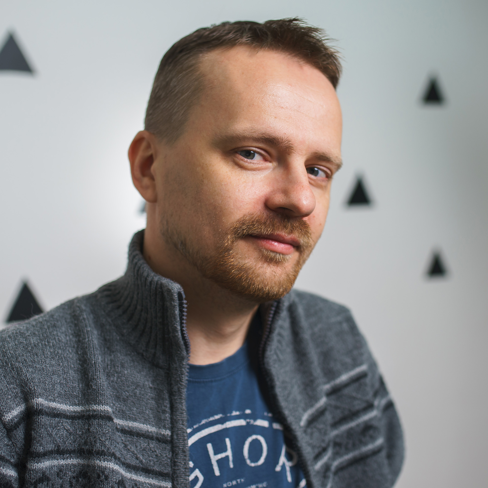

|  |
Здравствуйте!Очень надеюсь, что моя кандидатура подойдет вам, не смотря на то, что курс, судя по всему, ориентирован на более молодых соискателей. Я давно интересуюсь программированием, но вот за изучение взялся относительно недавно. Для меня этот курс важен даже не столько как источник знаний (в интеренете достаточно материалов по WordPress), сколько как возможность познакомится с практической стороной их применения и, в идеальном для меня варианте, получить опыт работы в команде. |
Учеба и опыт работы:
|